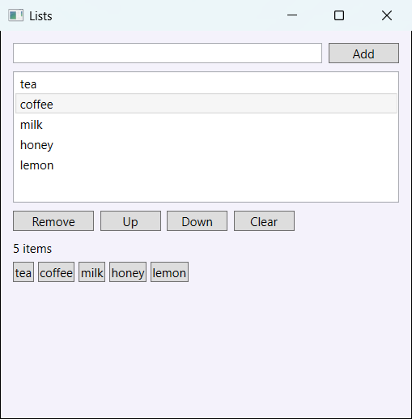

WPF lists and dynamic content
Most windows show a list that changes while the program runs. This lesson fills a ListBox from Ring, adds, removes and moves items, uses the selection, and builds a button for each item in code, so that the window follows the data.
What you will learn#
- the
Itemscollection:Add,Insert,RemoveAt,Clear,Count, SelectedIndex(and-1for nothing),- moving an item: take it out and put it in at a new place,
- creating controls in code and adding them to a panel (
Children), - keeping the window in step with the data with one
refreshfunction, - clicking buttons in a test.
The tutorial WPF menus and tabs wrote a fixed window in XAML. Here the XAML has an empty list and an empty panel, and the program fills them.
The program#
# WPF lists and dynamic content - a ListBox that the program fills, selection, moving and removing items, and controls made in code
load "dotnet.ring"
using {
"System.Windows"
"System.Windows.Controls"
"System"
}
oWindow = ""
func main
# The window has a text box to type into, buttons, a ListBox and a WrapPanel. The ListBox is empty in the XAML: the program fills it.
cXaml = '<Window xmlns="http://schemas.microsoft.com/winfx/2006/xaml/presentation" xmlns:x="http://schemas.microsoft.com/winfx/2006/xaml" Title="Lists" Width="420" Height="420" Background="#F4F2FB">'
cXaml += '<StackPanel Margin="12">'
cXaml += '<DockPanel><Button x:Name="add" Content="Add" Width="70" DockPanel.Dock="Right" Margin="6,0,0,0"/><TextBox x:Name="input"/></DockPanel>'
cXaml += '<ListBox x:Name="list" Height="130" Margin="0,8,0,8"/>'
cXaml += '<StackPanel Orientation="Horizontal">'
cXaml += '<Button x:Name="remove" Content="Remove" Width="80" Margin="0,0,6,0"/><Button x:Name="up" Content="Up" Width="60" Margin="0,0,6,0"/>'
cXaml += '<Button x:Name="down" Content="Down" Width="60" Margin="0,0,6,0"/><Button x:Name="clear" Content="Clear" Width="60"/>'
cXaml += '</StackPanel>'
cXaml += '<TextBlock x:Name="count" Margin="0,8,0,4" Text="0 items"/>'
cXaml += '<WrapPanel x:Name="chips"/>'
cXaml += '</StackPanel></Window>'
oWindow = wpfXaml(cXaml)
wpfFind(oWindow,"add").setClickEvent("addItem()")
wpfFind(oWindow,"remove").setClickEvent("removeItem()")
wpfFind(oWindow,"up").setClickEvent("moveItem(-1)")
wpfFind(oWindow,"down").setClickEvent("moveItem(1)")
wpfFind(oWindow,"clear").setClickEvent("clearItems()")
wpfRun(oWindow)
func listBox
return wpfFind(oWindow,"list")
# Items is the collection of the items of a list control. Add puts an item at the end, Insert at a place, RemoveAt takes one away.
func addItem
cText = trim(wpfFind(oWindow,"input").Text)
if cText = ""
return
ok
listBox().Items.Add(cText)
wpfFind(oWindow,"input").Text = ""
refresh()
# SelectedIndex is -1 when nothing is selected
func removeItem
nIndex = listBox().SelectedIndex
if nIndex >= 0
listBox().Items.RemoveAt(nIndex)
refresh()
ok
# move the selected item up (-1) or down (1): take it out and put it in at the new place
func moveItem nStep
nIndex = listBox().SelectedIndex
nNew = nIndex + nStep
if nIndex < 0 or nNew < 0 or nNew >= listBox().Items.Count
return
ok
cText = listBox().Items.Item(nIndex)
listBox().Items.RemoveAt(nIndex)
listBox().Items.Insert(nNew,cText)
listBox().SelectedIndex = nNew
refresh()
func clearItems
listBox().Items.Clear()
refresh()
# the count, and a button for each item in the WrapPanel: controls MADE BY THE PROGRAM, as many as there are items. The panel is emptied
# first, and each button gets the code that shows its item.
func refresh
nCount = listBox().Items.Count
wpfFind(oWindow,"count").Text = "" + nCount + " items"
oChips = wpfFind(oWindow,"chips")
oChips.Children.Clear()
for i = 0 to nCount - 1
oChip = wpfButton(listBox().Items.Item(i),"showItem(" + i + ")")
oChip.Margin = new Thickness(0,2,4,2)
oChips.Children.Add(oChip)
next
func showItem nIndex
wpfFind(oWindow,"count").Text = "Item " + (nIndex + 1) + ": " + listBox().Items.Item(nIndex)
How it works#
The Items collection#
listBox().Items is the list of the items of a ListBox. Add(text) adds an item at the end, Insert(index, item) puts one at a place, RemoveAt(index) removes one, Clear() removes all, and Count and Item(index) read it. The items here are texts, but a list can hold any object. Insert has two values in a fixed order, so it is called with two plain values and not with names.
The selection#
SelectedIndex is the number of the selected item, counted from 0, and -1 when nothing is selected. removeItem and moveItem start by looking at it, and do nothing when there is no selection: the test checks that too. After a move the program sets SelectedIndex to the new place, so the user can press Up again.
Moving an item#
There is no move method, so the function takes the item out (RemoveAt), puts it in at the new place (Insert) and selects it. The edges are checked first: the first item cannot go up and the last cannot go down.
One refresh#
After each change the program calls refresh, which sets the count text and makes the buttons again. The window is a picture of the data, and there is one function that draws it. A program that updates the count in five different places forgets one of them.
Controls made in code#
oChips.Children.Clear() removes the old buttons, and a loop makes one wpfButton(text, code) for each item, sets its Margin and adds it with Children.Add. The code of each button is a text that includes the number of the item ("showItem(" + i + ")"), so the button knows which item it shows. A WrapPanel puts the buttons in a row and starts a new row when the row is full.
The test#
The test acts like the user: it types into the text box and clicks Add three times, checks the items, the count and the buttons, clicks one of the made buttons, selects an item and moves it, removes the selected item, and clears the list. Buttons are clicked by raising their Click event (RaiseEvent), as in the tutorial WPF layout and styles.
The checks of this program are in a separate file, selftest/ch11_wpf_lists.ring:
# the checks of ch11_wpf_lists.ring: run with ring ch11_wpf_lists.ring --selftest (the program loads this file and runs selfTest() once its window is shown)
# the items as one text, for the test
func itemsText
cText = ""
nLastItem = listBox().Items.Count - 1
for i = 0 to nLastItem
if cText != ""
cText += ","
ok
cText += listBox().Items.Item(i)
next
return cText
func clickButton oButton
oButton.RaiseEvent(new RoutedEventArgs().@New([ :routedEvent = new WpfButtonBase().ClickEvent ]))
func selfTest
# add three items through the text box and the Add button
for cText in [ "tea","coffee","milk" ]
wpfFind(oWindow,"input").Text = cText
clickButton(wpfFind(oWindow,"add"))
next
dnAssert("three items",itemsText(),"tea,coffee,milk")
dnAssert("the count",wpfFind(oWindow,"count").Text,"3 items")
dnAssert("the text box is empty again",wpfFind(oWindow,"input").Text,"")
dnAssert("an empty text adds nothing",itemsText(),"tea,coffee,milk")
# a button was made for each item
dnAssert("three chips",wpfFind(oWindow,"chips").Children.Count,3)
dnAssert("the chip text",wpfFind(oWindow,"chips").Children.Item(1).Content,"coffee")
clickButton(wpfFind(oWindow,"chips").Children.Item(2))
dnAssert("a chip was clicked",wpfFind(oWindow,"count").Text,"Item 3: milk")
# selecting and moving: coffee down, then up twice
listBox().SelectedIndex = 1
clickButton(wpfFind(oWindow,"down"))
dnAssert("coffee down",itemsText(),"tea,milk,coffee")
dnAssert("the selection follows",listBox().SelectedIndex,2)
clickButton(wpfFind(oWindow,"up"))
clickButton(wpfFind(oWindow,"up"))
clickButton(wpfFind(oWindow,"up")) # the first place: nothing to do
dnAssert("coffee up",itemsText(),"coffee,tea,milk")
# remove the selected item, and with nothing selected remove nothing
clickButton(wpfFind(oWindow,"remove"))
dnAssert("removed",itemsText(),"tea,milk")
listBox().SelectedIndex = -1
clickButton(wpfFind(oWindow,"remove"))
dnAssert("nothing selected, nothing removed",itemsText(),"tea,milk")
# clear
clickButton(wpfFind(oWindow,"clear"))
dnAssert("empty",wpfFind(oWindow,"count").Text,"0 items")
dnAssert("no chips",wpfFind(oWindow,"chips").Children.Count,0)What you learned#
- adding, inserting, removing and clearing items,
- the selection and its
-1, - one function that keeps the window in step with the data,
- controls that the program makes and adds to a panel.
Exercises#
- Add a button that sorts the items (read them into a Ring list,
sortit, fill the list again). - Show the number of the selected item in the count text when the selection changes (
setSelectionChangedEvent). - Make each chip remove its item when it is clicked.
- Add an Undo button that remembers the last removed item.